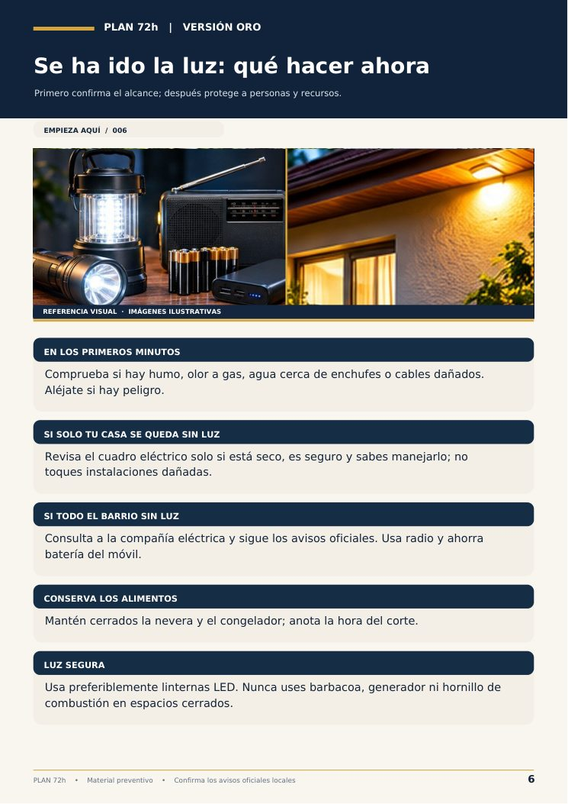
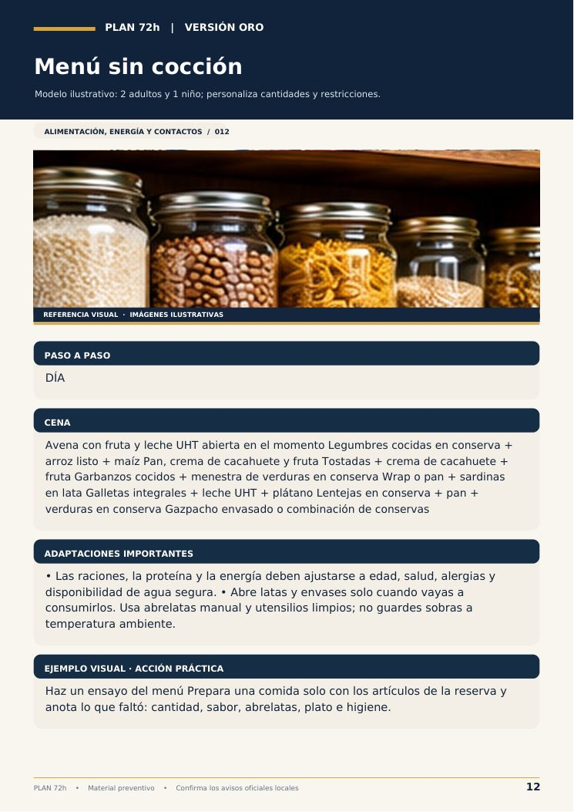
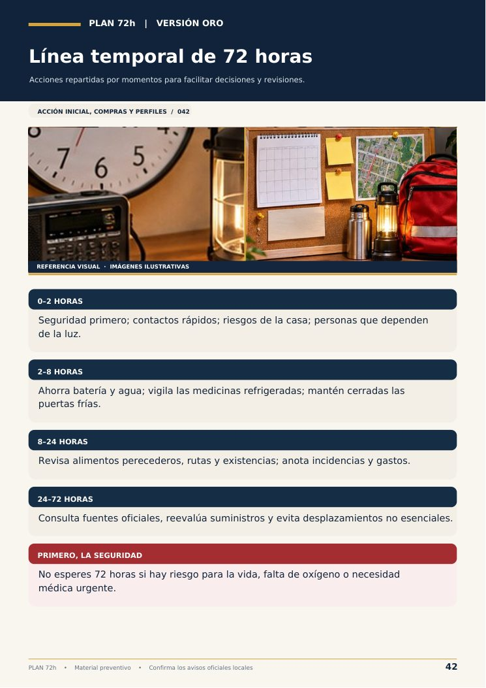
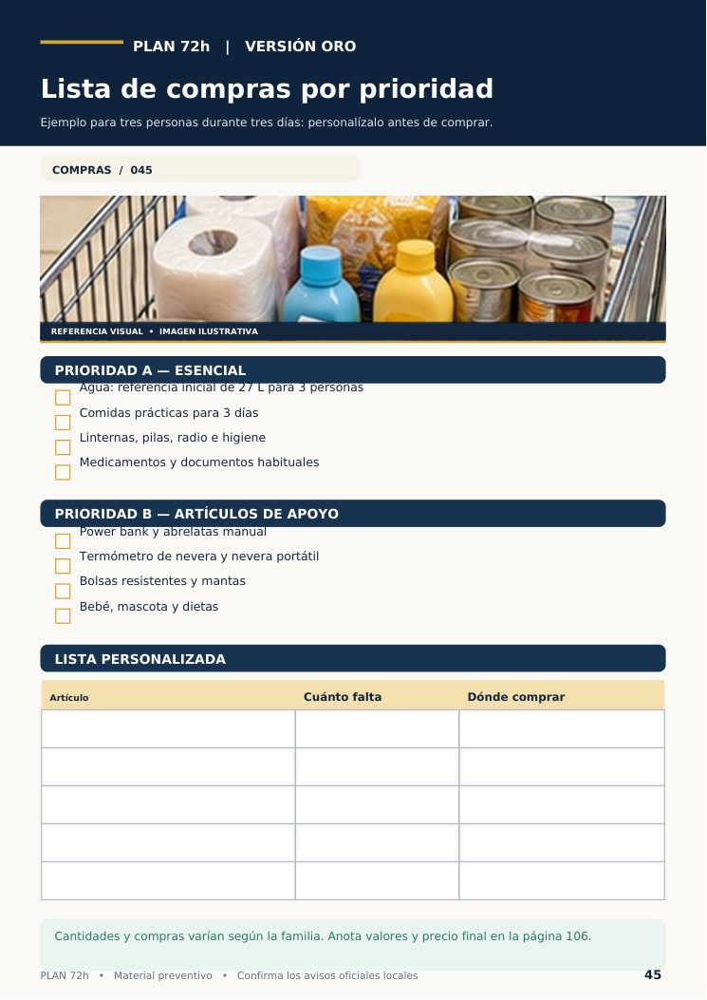

Improvisar cuesta tiempo cuando falta lo básico
Un apagón largo, una tormenta o un corte de agua en casa. Sin un plan, cada decisión se toma con prisa; con uno escrito, ya está pensada.
«No sé por dónde empezar»
La guía empieza por los primeros 30 minutos y sigue con una línea de tiempo de las 72 horas.
Sin luz, sin móvil, sin internet
Contactos, puntos de encuentro y mensajes preparados, en papel, para cuando no hay señal.
Se corta el agua
Cuánta reservar por persona, cómo guardarla y cuándo tratarla o no usarla.
Bebés, mayores y mascotas
Fichas propias para quien necesita más cuidado: medicación, movilidad, alimentación.
Sin batería, el papel sigue funcionando
Una guía guardada en el móvil sirve hasta que se agota. Por eso el Plan 72h está pensado para imprimirse, y también para rellenarse en pantalla antes.
📱 Si solo está en el móvil
- Depende de la batería
- Sin cobertura no se puede consultar
- Compite con las llamadas por la misma batería
🖨️ Con el Plan 72h impreso
- Teléfonos y puntos de encuentro en papel
- Cualquiera en casa puede seguir los pasos
- Fichas rápidas listas en la nevera o en la mochila
Siete áreas que tienen que funcionar juntas
Lo práctico, lo sanitario y lo familiar en un solo plan, repartido en 13 partes.
1 · Agua
Reserva para 72 horas, almacenamiento y tratamiento paso a paso.
2 · Alimentos
Menú sin cocinar, nevera y congelador sin luz, compras por prioridad.
3 · Energía
Luz segura, autonomía sin electricidad y vuelta segura del suministro.
4 · Salud
Botiquín, medicación continua, equipos médicos y señales de alerta.
5 · Comunicación
Contactos de emergencia, mensajes preparados y avisos oficiales.
6 · Rutas y apoyo
Quedarse o salir, mochila de evacuación y puntos de encuentro.
7 · Personas
Quién necesita ayuda y quién se encarga de cada tarea en la familia.
+ Seguridad
Monóxido de carbono, gas, generadores y alimentos tras el apagón.
Mirad el Plan 72h por dentro
Páginas reales del Plan 72h.




Con fuentes oficiales para verificar cada dato
La guía incluye una sección de fuentes y de configuración de alertas, para que comprobéis y actualicéis la información en los canales oficiales de vuestra zona.
Ninguno de estos organismos patrocina ni avala este producto. Es una guía independiente que remite a sus recomendaciones públicas.
La guía completa, en un solo PDF
Para leer en el ordenador, rellenar en pantalla o imprimir y tener a mano el día que no haya luz.
13 partes y 125 páginas: desde los primeros 30 minutos hasta fichas rápidas de decisión, formularios de salud y un simulacro familiar.
Una tarde para dejarlo preparado
Recibís el PDF
Llega a vuestro correo tras la compra. Imprimid las fichas que vayáis a usar, o rellenadlas en pantalla.
Lo adaptáis a vuestra casa
Contactos, puntos de encuentro, medicación y necesidades de cada persona de la casa.
Lo ponéis a prueba
Seguid la rutina de 30 días y haced el simulacro de 20 minutos para ver qué hay que ajustar.
Lo que conviene saber
¿Cómo lo recibo?
En cuanto se confirma el pago os llega un correo con el PDF, listo para descargar, imprimir o rellenar en pantalla.
¿Hay que imprimirlo?
No es obligatorio: los campos se pueden rellenar en el ordenador. Aun así, recomendamos imprimir al menos los contactos y las fichas rápidas, porque en un apagón el papel no depende de la batería.
¿Las autoridades no ofrecen esto gratis?
Sí, Protección Civil y otros organismos publican recomendaciones gratuitas, y conviene leerlas. El Plan 72h no las sustituye: es un cuaderno de trabajo para que vuestra familia deje por escrito sus propias respuestas.
¿Sirve si vivimos en un piso?
Sí. Hay una sección para adaptar el plan a casa, piso o zona rural.
¿Incluye comida, agua o equipo?
No. Es una guía digital en PDF. Os ayuda a decidir qué tener y cómo organizarlo, sin gastar de más.
¿Es una suscripción?
No. Es un pago único. No se cobra nada después.
¿Es un producto oficial?
No. Es un producto independiente, de carácter educativo y preventivo. En una emergencia real, seguid siempre las instrucciones de los servicios oficiales.
Preparar el plan lleva una tarde. Improvisarlo, mucho más.
125 páginas para que cada persona de la casa sepa qué hacer, dónde están las cosas y a quién llamar.
Quiero mi Plan 72h